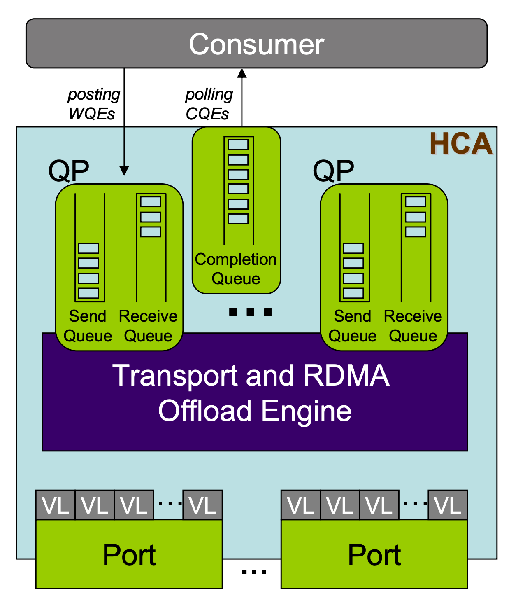

📒 高性能网络¶
RDMA¶
RDMA 基本概念¶
Quote
注册内存区域¶
RDMA 通信前，需要先注册内存区域 MR（memory region），供 RDMA 设备访问：
- 内存页面必须被 Pin 住不可换出。
- 注册时获得 L_Key（local key） 和 R_Key（remote key）。前者用于本地访问，后者用于远程访问。
交换信息¶
在进行 RDMA 通信前，通信双方需要交换 R_Key 和 QP 等信息。可以先通过以太网建立 TCP 连接，或者使用 rdma_cm 管理 RDMA 连接。
异步通信¶
RDMA 基于三个队列进行异步通信：
- Send、Receive 队列用于调度工作（work）。这两个队列也合称为 Queue Pair（QP）。
- Completion 队列用于通知工作完成。
RDMA 通信流程如下：
- 应用程序将 WR（work request，也称为 work queue element）放入（post）到 Send 或 Receive 队列。
- WR 中含有 SGE（Scatter/Gather Elements），指向 RDMA 设备可以访问的一块 MR 区域。在 Send 队列中指向发送数据，Receive 队列中指向接收数据。
- WR 完成后，RDMA 设备创建 WC（work completion，也称为 completion queue element）放入 Completion 队列。应用向适配器轮询（poll）Completion 队列，获取 WC。
对于一个应用，QP 和 CQ 可以是多对一的关系。QP、CQ 和 MR 都定义在一个 Protection Domain（PD） 中。
{kind=link}

InfiniBand Technology Overview - SNIA
访存模式¶
RDMA 支持两种访存模式：
- 单边（one-sided）：read、write、atomic 操作。
- 被动方注册一块内存区域，然后将控制权交给主动方；主动方使用 RDMA Read/Write 操作这块内存区域。
- 被动方不会使用 CPU 资源，不会知道 read、write 操作的发生。
- WR 必须包含远端的虚拟内存地址和 R_key，主动方必须提前知道这些信息。
- 双边（two-sided）：send、receive 操作。
- 源和目的应用都需要主动参与通信。双方都需要创建 QP 和 CQ。
- 一方发送 receive，则对端需要发送 send，来消耗（consume）这个 receive。
- 接收方需要先发送自己接收的数据结构，然后发送端按照这个数据结构发送数据。这意味着接收方的缓冲区和数据结构对发送方不可见。
在单个连接中，可以混用并匹配（mix and match）这两种模式。
内核旁路¶
RDMA 提供内核旁路（kernel bypass）功能：
- 原先由 CPU 负责的分片、可靠性、重传等功能，现在由适配器负责。
- RDMA 硬件和驱动具有特殊的设计，可以安全地将硬件映射到用户空间，让应用程序直接访问硬件资源。
- 数据通路直接从用户空间到硬件，但控制通路仍然通过内核，包括资源管理、状态监控和清理等。保证系统安全稳定。
Question
事实上，通信双方的 QP 被直接映射到了用户空间，因此相当于直接访问对方的内存。
如果你对操作系统和硬件驱动有一些了解，不妨想一想下面的问题：
- 如何才能让应用程序直接访问硬件资源，同时实现操作系统提供的应用隔离和保护呢？
- 如果在两个独立的虚拟内存空间（可能在不同物理机、不同架构上）之间建立联系？
RDMA 编程¶
具体地说，学习的是 libibverbs 库。
Quote
- 阅读 For the RDMA novice: libfabric, libibverbs, InfiniBand, OFED, MOFED? — Rohit Zambre，了解这些软件包的关系。
- RDMA Aware Networks Programming User Manual - NVIDIA Docs：作为手册使用。包含 RDMA 架构概述和 ibverb、rdma_cm 等 API 文档。该文档第八章包含了各层次 API 编程的例子，具有比较详细的注释，适合初学者学习。
接下来通过 NVIDIA Docs 提供的例子来学习 RDMA 编程。
IB Verbs¶
Quote
- 阅读 InfiniBand: An Introduction + Simple IB verbs program with RDMA Write - Service Engineering (ICCLab & SPLab)，了解 PD、MR、QP、CQ、WR、SGE、WC 等基本概念。
- 阅读 RDMA Tutorial - Netdev，其中介绍了
ipv_pd等重要的 API。 - 阅读 Introduction to Programming Infiniband RDMA · Better Tomorrow with Computer Science，这篇文章逐步讲解了如何编写一个简单的 RDMA 程序，并给出了详细的代码。
Note
相关头文件为 infiniband/verbs.h，Debian 软件包为 libibverbs-dev。
代码见 RDMA_RC_example.c。
准备阶段：
resource_create()：创建资源，包括 PD、MR、QP、CQ 等。connect_qp()：通信双方交换信息，包括 LID、QP_NUM、RKEY 等，将 QP 状态更改为 INIT、RTR、RTS。sock_sync_data()：通过 TCP 通信交换信息。modify_qp_to_init()post_receive()：预置接收队列，也可以放在通信阶段。modify_qp_to_rtr()modify_qp_to_rts()- 同步点
flowchart TD
subgraph s1["resource_create()"]
n27@{ shape: "rounded", label: "ibv_query_port()" }
n26@{ shape: "hex", label: "ibv_port_attr" }
n25@{ shape: "hex", label: "ibv_mr" }
n17@{ shape: "hex", label: "char *" }
n16@{ shape: "rounded", label: "ibv_get_device_name()" }
n15@{ shape: "rounded", label: "ibv_get_device_list()" }
n14@{ shape: "hex", label: "ibv_device" }
n1@{ shape: "hex", label: "ibv_pd" }
n2@{ shape: "rounded", label: "ibv_alloc_pd()" }
n3@{ shape: "hex", label: "ibv_context" }
n4@{ shape: "hex", label: "buf" }
n3 --- n2
n2 --- n1
n5@{ shape: "rounded", label: "ibv_open_device()" }
n5 --- n3
n6@{ shape: "rounded", label: "ibv_create_cq()" }
n3 --- n6
n7@{ shape: "hex", label: "mr_flags" }
n8@{ shape: "rounded", label: "ibv_reg_mr" }
n4 --- n8
n7@{ shape: "fr-rect", label: "mr_flags<br/>=IBV_ACCESS_REMOTE_READ|..." } --- n8
n1 --- n8@{ shape: "rounded", label: "ibv_reg_mr()" }
n9@{ shape: "hex", label: "ibv_qp_init_attr" }
n10@{ shape: "hex", label: "ibv_cq" }
n6 --- n10
n9@{ shape: "hex", label: "ibv_qp_init_attr" }
n10 ---|"send_cq, recv_cq"| n9
n11@{ shape: "fr-rect", label: "qp_type<br/>=IBV_QPT_RC" }
n11 --- n9
n12@{ shape: "rounded", label: "ibv_create_qp()" }
n9 --- n12
n13@{ shape: "hex", label: "ibv_qp" }
n12 --- n13
end
n15 --- n14@{ shape: "hex", label: "ibv_device **" }
n14 --- n16
n16 --- n17
n14 --- n5
subgraph s2["connect_qp()"]
n36@{ shape: "rounded", label: "sock_sync_data()" }
subgraph s3["cm_con_data_t"]
n24@{ shape: "hex", label: "buf" }
n23@{ shape: "hex", label: "lid" }
n22@{ shape: "hex", label: "qp_num" }
n20@{ shape: "hex", label: "rkey" }
n21@{ shape: "hex", label: "gid" }
end
n18@{ shape: "hex", label: "ibv_gid" }
n19@{ shape: "rounded", label: "ibv_query_gid()" }
end
n3 --- n19
n19 --- n18
n18 --- n21
n8 --- n25
n25 --- n20
n4 --- n24
n13 --- n22
n27 --- n26
n3 --- n27
n26 --- n23
n29 --- n30
n13 --- n30
n28 --- n29
subgraph s5["post_receive()"]
n33@{ shape: "rounded", label: "ibv_post_recv" }
n32@{ shape: "hex", label: "ibv_recv_wr" }
n31@{ shape: "hex", label: "ibv_sge" }
end
n25 ---|"lkey"| n31
n4 --- n31
subgraph s4["modify_qp_to_init, rts()"]
n28@{ shape: "fr-rect", label: "qp_state<br/>=IBV_QPS_INIT" }
n30@{ shape: "rounded", label: "ibv_modify_qp()" }
n29@{ shape: "hex", label: "ibv_qp_attr" }
end
n31 --- n32
n32 --- n33
subgraph s6["modify_qp_to_rtr()"]
n34@{ shape: "rounded", label: "Rounded Rectangle" }
n35@{ shape: "hex", label: "ibv_qp_attr" }
end
n22 --- n35
n23 --- n35
n35 --- n34@{ shape: "rounded", label: "ibv_modify_qp()" }
s3 --- n36通信阶段：
post_send()：创建并发送 WR，WR 的类型取决于opcode。poll_completion()：轮询得到 WC。
flowchart TD
subgraph s1["post_send()"]
n12@{ shape: "rounded", label: "ibv_post_send()" }
n7@{ shape: "fr-rect", label: ".opcode<br/>IBV_WR_SEND<br/>IBV_WR_RDMA_READ<br/>IBV_WR_RDMA_WRITE" }
n1@{ shape: "hex", label: "ibv_sge" }
n2@{ shape: "hex", label: "ibv_send_wr" }
end
n3@{ shape: "hex", label: "ibv_mr" }
n3 ---|".lkey"| n1
n4@{ shape: "hex", label: "buf" }
n4 --- n1
n1 --- n2
subgraph s2["IBV_WR_SEND only"]
n5@{ shape: "hex", label: ".rkey" }
n6@{ shape: "hex", label: ".remote_addr" }
end
s2 ---|".wr.rdma"| n2
n7 --- n2
subgraph s3["poll_completion()"]
n11@{ shape: "rounded", label: "assert()" }
n10@{ shape: "rounded", label: "ibv_poll_cq()" }
n9@{ shape: "hex", label: "ibv_wc" }
end
n8@{ shape: "hex", label: "ibv_cq" }
n9 --- n10
n8 --- n10
n10 ---|".status == IBV_WC_SUCCESS"| n11
n2 --- n12深入 IB Verbs 技术规范¶
参考链接中的编程手册将 IB Verbs 的所有细节都讲解得很清楚。
RDMA_CM¶
Note
相关头文件为 rdma/rdma_cma.h，Debian 软件包为 librdmacm-dev。
代码见 mckey.c。
RDMA_CM 用于管理 RDMA 连接，包装了使用 socket 编程交换 QP、R_Key 等信息的过程，减少代码量。它的接口与 Socket 类似：
与 Socket 编程的比较：
- 操作异步进行，通过
rdma_event_channel进行事件通知。 rdma_cm_id（identifier）与fd类似，用于标识连接。- 使用
rdma_bind_addr()将rdma_cm_id与sockaddr绑定，类似bind()。
本例为多播通信，需要使用 rdma_join_multicast() 和 rdma_leave_multicast() 进出多播组。
flowchart TD
subgraph s1["run()"]
subgraph s2["connect_evnets() [LOOP]"]
subgraph s5["join_handler()"]
n14@{ shape: "rounded", label: "ibv_create_ah()" }
n15@{ shape: "rounded", label: "inet_ntop()" }
end
subgraph s4["addr_handler()"]
n12@{ shape: "rounded", label: "rdma_join_multicast()" }
n13@{ shape: "rounded", label: "ibv_post_recv()" }
end
subgraph s3["cma_handler()"]
end
n9@{ shape: "rounded", label: "rdma_ack_cm_evnet()" }
n11@{ shape: "rounded", label: "rdma_get_cm_event()" }
n10@{ shape: "hex", label: "rdma_cm_event" }
end
n8@{ shape: "rounded", label: "rdma_bind_addr()" }
n7@{ shape: "hex", label: "char *" }
n6@{ shape: "rounded", label: "getaddrinfo()" }
n5@{ shape: "hex", label: "sockaddr" }
n2@{ shape: "rounded", label: "rdma_create_id()" }
n1@{ shape: "hex", label: "rdma_cm_id" }
end
n3@{ shape: "hex", label: "rdma_event_channel" }
n4@{ shape: "rounded", label: "rdma_create_event_channel" }
n4@{ shape: "rounded", label: "rdma_create_event_channel()" } --- n3
n3 --- n2
n2 --- n1
n6 --- n5
n7 --- n6
n5 ---|"src_addr"| n8
n1 --- n8
n11 --- n10
n10 --- n9
s3 --- s4
s3 --- s5
n10 --- s3
n3 --- n11
n1 --- s3
n16@{ shape: "rounded", label: "rdma_leave_multicast()" }
n1 --- n16
n5 ---|"dst_addr"| n12
n12 --- n16RDMA Verbs¶
Note
相关头文件为 rdma/rdma_verbs.h，Debian 软件包为 librdmacm-dev，相关 API 一般以 rdma_ 开头。
srq.c 是一个使用 SRQ（Shared Receive Queue）的例子。
mlx5dv 与 DevX¶
Quote
Note
相关头文件为 infiniband/mlx5dv.h，相关的 API 一般以 mlx5dv_ 开头。
mlx5dv（Direct Verbs）API 支持从用户空间直接访问 mlx5 驱动设备的资源，绕过 libibverbs 的数据通路，直接暴露低级别的数据通路。
兼容性
从 Connect-IB 开始的所有 Mellanox 网卡设备（包括 Connect-IB、ConnectX-4、ConnectX-4Lx、ConnectX-5 等）都实现了 mlx5 API。
DevX API 疑似是 Mellanox 开发的 mlx5dv 的前身，其仓库上次更新时间为 2018 年，当年 mlx5dv 也并入了 rdma-core。现在 DevX 成为了 mlx5dv 的一部分。
这部分的文档少得可怜。目前仅有的文档来自 rdma-core/providers/mlx5/man 的 mlx5 Programmer's Manual。我们先对 DevX API 的各个部分建立大概的印象：
-
DevX（见
mlx5dv_devx_obj_create）：目标是使用户空间驱动程序尽可能独立于内核。当设备提供新的功能和命令时，不需要内核更改就能使用。- DEVX 对象代表底层的固件对象。
- 创建 DEVX 对象后，可以通过
mlx5dv_devxAPI 进行查询、修改或销毁。
这一部分的数据结构都是固件相关的二进制数据，编程时采用大量宏定义和位操作。需要仔细查看具体的设备文档。
-
Direct Rule（见
mlx5dv_dr_flow）：让应用程序直接控制设备的所有包转发（packet steering）功能，定义复杂的流表规则，包括计数、封装、解封装等。
DMA 示例¶
使用 mlx5dv API 执行 DMA 拷贝：
- Host：
- 用 IB Verb 创建设备上下文、PD
- 使用
mlx5dv_devx_umem_reg()注册用户 DMA 内存，获得一个struct mlx5dv_devx_umem。 - 使用
MLX5_CMD_OP_CREATE_MKEY调用mlx5dv_devx_obj_create()获得 MKEY。 - 使用
mlx5dv_devx_general_cmd()执行MLX5_CMD_OP_ALLOW_OTHER_VHCA_ACCESS，允许其他 VHCA 访问内存。
- Device：
- 用 IB Verb 创建设备上下文、PD 和 MR。
- 从 Host 获取相关数据
- 使用
MLX5_CMD_OP_CREATE_GENERAL_OBJECT和MLX5_GENERAL_OBJ_TYPE_MKEY调用mlx5dv_devx_obj_create()创建 MR 别名。
Linux RDMA 运维¶
待整理
Resources on BlueField 2 Smart NICs: https://gist.github.com/aagontuk/cf01763c8ee26383afe10f51c9cd2984
- 交换芯片 BlueField：用于 DPU 产品线，简单来说就是网卡上有独立的 CPU，可以处理网络流量。例如，下面是 BlueField-2 DPU 的架构图：

Nvidia Bluefield DPU Architecture - DELL
RoCE 原理¶
Quote
- 端到端 RoCE 概念原理与部署调优：大部分是实际操作，没有清晰的理论讲解。
RoCE 协议存在 RoCEv1 和 RoCEv2 两个版本，取决于所使用的网络适配器。
- RoCE v1：基于以太网链路层实现的 RDMA 协议 (交换机需要支持 PFC 等流控技术，在物理层保证可靠传输）。
- RoCE v2：封装为 UDP（端口 4791） + IPv4/IPv6，从而实现 L3 路由功能。可以跨 VLAN、进行 IP 组播了。RoCEv2 可以工作在 Lossless 和 Lossy 模式下。
- Lossless：适用于数据中心网络，要求交换机支持 DCB（Data Center Bridging）技术。
RoCE 包格式¶


RoCE 指南 - FS
DPDK¶
问题记录¶
编译相关¶
-
编译 DPDK 时
Generating drivers/rte_common_ionic.pmd.c with a custom command FAILED: drivers/rte_common_ionic.pmd.c ... Exception: elftools module not found解决方法：
pip安装pyelftools模块
其他相关知识¶
- DMA 机制：包括 IOVA、VFIO 等。
- Linux 内存管理机制：包括 Hugepage、NUMA 等。
- Linux 资源分配机制：包括 cgroup 等。
-
基础线程库 pthread。
-
Non-Uniform Memory Access (NUMA)：非一致性内存访问。
- 与 UMA 相比的优劣：内存带宽增大，需要编程者考虑局部性
- 每块内存有
- home：物理上持有该地址空间的处理器
- owner：持有该块内存值（写了该块内存）的处理器
- Linux NUMA：https://docs.kernel.org/mm/numa.html
- Cache Coherent NUMA
- 硬件资源划分为 node
- 隐藏了一些细节，不能预期同个 node 上的访存效率相同
- 每个 node 有自己的内存管理系统
- Linux 会尽可能为任务分配 node-local 内存
- 在足够不平衡的条件下，scheduler 会将任务迁移到其他 node，造成访存效率下降
- Memory Policy
- Linux 实践
numactllstopo
-
Hugepage
- 受限于 TLB 大小，Hugepage 会减少 TLB miss
- 场景：随机访存、大型数据结构
- https://www.evanjones.ca/hugepages-are-a-good-idea.html
-
https://rigtorp.se/hugepages/¶